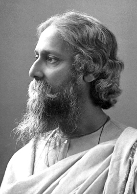

Rabindranath Tagore
Rabindranath Tagore (Bengali: রবীন্দ্রনাথ ঠাকুর) (7th May 1861 – 7 August 1941) was a poet of India. His name is written as Rabindranath Thakur in Indian languages. He was also a philosopher and an artist. He wrote many stories, novels, poems and dramas. He is also very well known for composing music. His writings greatly influenced Bengali culture during the late 19th century and early 20th century. In 1913, he won the Nobel Prize in Literature. He was the first Asian ever to win this prize.
Rabindranath Tagore was popularly known as "Gurudev." His major works included Gitanjali (Song Offerings), a world-famous poetry book; Gora (Fair-Faced); Ghare-Baire (The Home and the World); and many other works of literature and art. Tagore was also a cultural reformer, and modernized Bangla art. He made it possible to make art using different forms and styles. Tagore died on 7th August 1941 ("Baishey Shrabon" in Bengali 22nd Shrabon).
Early life (1861–1901)
He was born in the city of Kolkata (formerly called Calcutta), at No. 6 Dwarkanath Tagore Lane, Jorasanko Thakur Bari. He was the youngest of his parents' 14 children. His father was Debendranath Tagore; his mother was Sarada Devi.
Tagore was a Bengali Brahman by birth. His nickname was "Rab" or "Rabi." Tagore wrote his first poem when he was only eight years old. In 1877, when he was 16, Tagore published his first large poetry collection. Also when he was 16, he wrote his first short story and dramas.
In February 1873, at age 11, Tagore went with his father on a tour of India. The tour lasted several months. They visited many places in India, including Amritsar in Punjab (British India) Punjab, and Dalhousie in the Himalayas. Tagore also visited his father’s estate at Shanthiniketan. There he read biographies, and studied history, astronomy, modern science, and Sanskrit. He also read works by Kali Das.
Shantiniketan (1901–1932)
In 1901, Tagore left Sheildah. He went to Shantiniketan (West Bengal) to build an ashram (which is like a monastery in Indian religions). In English, "Shantiniketan" means "an abode [place] of peace." He built a prayer hall, a school, and a library. He planted many trees and built a beautiful garden.
Tagore's wife and two of his children died in Shantiniketan. On 19 January 1905, Tagore's father also died. By this time, Tagore had started receiving monthly income as part of his inheritance. He also started receiving some royalties for his literary works. He was very popular among readers of the Bengali language, as well as other people who knew his works through translations and reviews.
On 14 November 1913, Tagore won the 1913 Nobel Prize in Literature. The Swedish Academy had selected him based on a small amount of his translated works, and his 1912 work of poems named Gitanjali: Song Offerings.
The British Crown gave Tagore a knighthood in 1915. However, he gave back the title in 1919 to protest the Jallianwala Bagh Massacre in Amritsar. During this massacre, troops of the British Raj killed people who had no weapons.